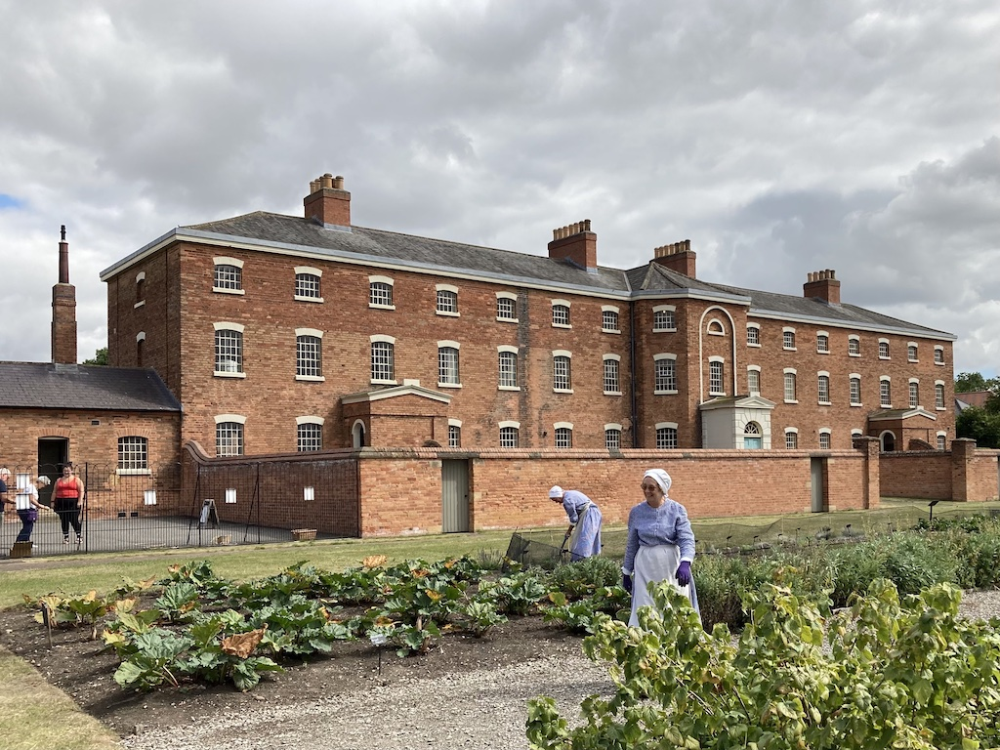
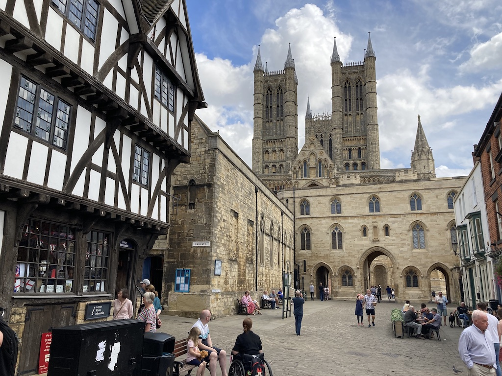
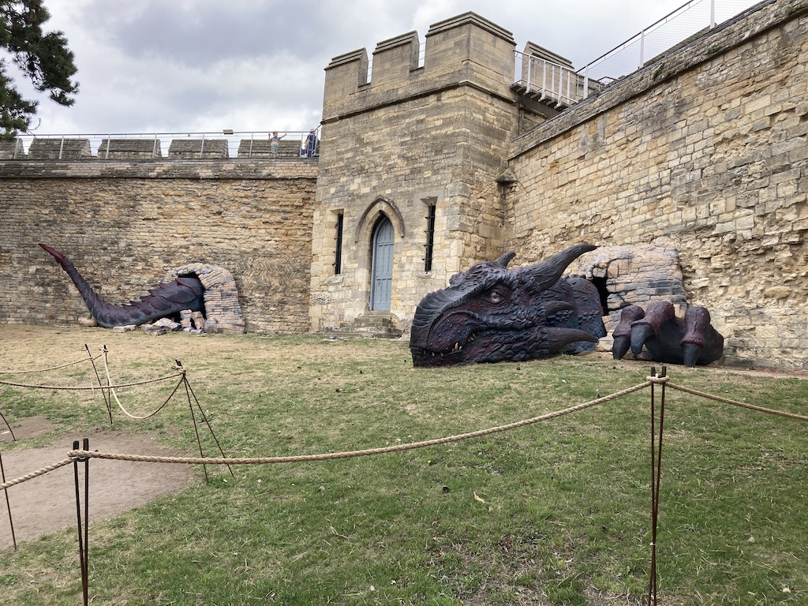
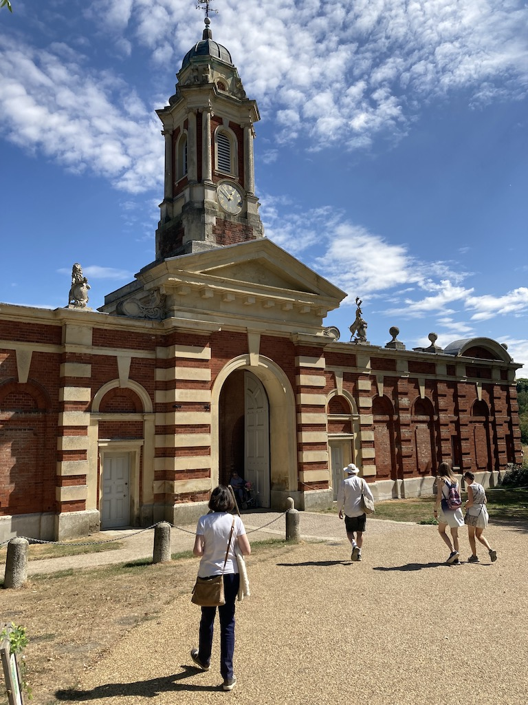

I wouldn't usually record a weekend away with friends, but on this occassion we visited Lincoln, which was a first for us. We also visited a National Trust property, which is a usual event when we visit Kate and Dick.
On Friday 19th August, an horrendous journey around the M25 and up the M1 was improved only by stopping for lunch at Alan's in Tilsworth, just a short diversion from our route. The M25 after Cobham services was stop/start nearly all the way and then the M1 was the same. This continued after we left Alan's and so, seeing warnings of further delays, we cut across to the A1 (a pleasant route after the motorways) and arrived in Collingham at about 5:30, having done 243 miles. Kate and Dick have moved from Badby in Northamptonshire to a 'retirement village' on the outskirts of Collingham, which is in Nottinghamshire, but close to the Lincolnshire border. Their daughter lives 15 minutes drive away in Lincolnshire. They have a small bungalow, so we stayed in the 'guest suite' (a bedroom with a bathroom) in a block of flats on the site. It also has some communal spaces.
On Saturday, after a late breakfast (Kate and Dick are not early risers) they took us to a National Trust property called 'The Workhouse'. We learnt quite a lot about workhouses in general, particularly about segregation. After some lunch in their cafe we joined a guided tour around the outside of the building. Then we each had a little tablet, which you placed over a disc to read about that particular exhibit. It worked very well. There were three floors (plus a basement), which housed 127 inmates.
Sunday was then taken up with a visit to Lincoln. After another late start we drove into Lincoln, stopping at their daughter's house to feed the chickens (their daughter and family were on holiday). We parked under the walls of the castle and had lunch in the cathedral refectory, then walked inside the cathedral and then around the grounds of the castle (inside the walls). Rowan would have liked the dragon in th castle walls. Lincoln is much more of a tourist destination than we had realised.
 After dinner we went to a room on the ground floor of the apartment block, where people gather on a Sunday evening to play 'casino' games. So we played black-jack and roulette. The organiser provides a bag of chips. It was a little bit odd, but at least we only had to go upstairs to our room.
On Monday we decided to try going home via a different route. This time we took the A1 south to the M11 (via the A14), followed that to the M25, went over the Dartford crossing and then round the M25 to the M23. We did not have a single hold-up on the entire journey.
We took a diversion just after the A1(M), down quite a nice 'A' road, to the Wimpole Estate, a National Trust property. It was very large, so we looked at the Home Farm, but did not get near the house. Our plan was to have lunch there, which we did, but the eating facilities were not very good. I thought that the stable block looked familiar, but the car parks and entrance were new, so we didn;t recognise the property. In fact, we visited the house in 2012 on our way to Cambridge!
© David James 2022 Last updated: 28th August 2022